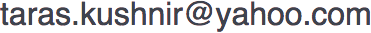

Let's make Xpiks better together
Xpiks is a tool of choise of many microstock contributors. It is a first software which works on all major platforms and allows you to keyword and upload your photos, illustrations and videos to microstocks. Xpiks is fast, it has clean interface and it is highly portable. And it is absolutely free.
I started development around 4 years ago only for my wife as a replacement for my console scripts she used before. After some time I made an announcement on few forums and other people also started using it. Currently Xpiks has couple of hundreds of daily users.
Despite being free for you, Xpiks requires a lot of resources to be maintained and developed. I'm working on Xpiks literally every day after my full-time job (with the much appreciated little help of a few others).
There're many ways Xpiks can improve. You can find below items which are in my short list of top-rated improvements waiting to be implemented. And this is only a top of the iceberg.
- Integrations - integrations with existing software like Adobe Lightroom, integrations with various microstock websites
- Plugins - plugins will be next big thing in Xpiks. They will provide various functionality needed for different users like hierarchical keywords, artworks rank tracking and more
- Submitting - possibility to submit artworks for review after uploading them to microstocks
- Improved troubleshooting - automatic logs submission, user's feedback tool
- Smart keywording - automatic keywording with knowledge of microstocks specifics
- More tutorials - tutorials proven to be a good idea for user's education, we need more of these
Despite all these interesting tasks there're tons of smaller everyday problems to solve nobody of the users ever thinks about: website upgrade to https, Apple developer account, logs analysis, forever-changing microstock intricacies, hosting upgrade, GDPR compliance etc.
Please consider donating not only if you want to see these or other features in Xpiks but also to say "Thank You" if Xpiks saved you time, improved your workflow or saved you some money on non-free tools.
If there will be measurable amount of money collected I will be able to offload some tasks to freelancers in order to work on more important features, pay for the development accounts, upgrade hosting and most importanly, keep Xpiks free for anybody.
Let's make Xpiks better together!
P.S. If you don't have a PayPal account you can support Xpiks via Moneybookers/Skrill by sending money to 